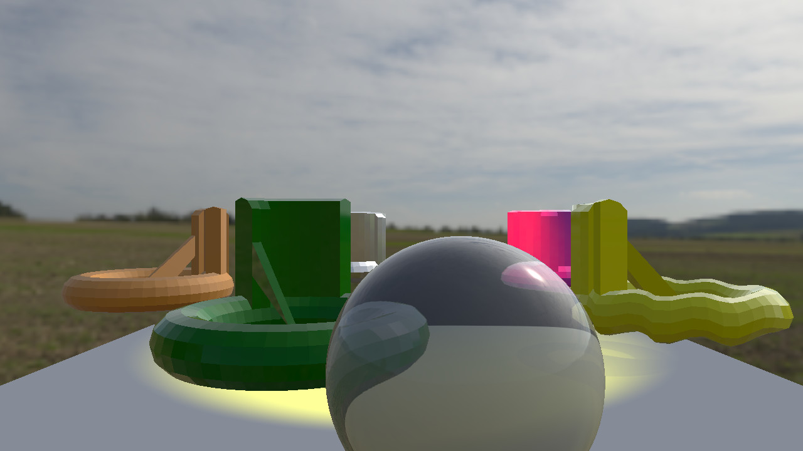

Qt Quick 3D - Custom Materials Example
Demonstrates writing shaded custom materials.

This example shows how to write shaded custom materials. With shaded materials, we don't have to write complete shader programs. Instead, we write functions that modify Qt's standard shaders. This way the resulting material will by default participate in lighting, shadow mapping, and be compatible with light probes. We only have to write custom logic for the cases where we want special behavior. This is achieved by effectively augmenting the shader code that would be generated for a PrincipledMaterial with our own custom functions that get called at certain stages in the vertex and fragment shaders.
To make a shaded custom material, set the shadingMode property to CustomMaterial.Shaded.
A simple material
The first model uses a simple material that does not add any custom logic. We set the custom material on the model just like any other material:
Model { source: "weirdShape.mesh" scale: Qt.vector3d(100, 100, 100) rotation: Quaternion.fromEulerAngles(-90, 0, 0) x: v3d.radius materials: [ CustomMaterial { shadingMode: CustomMaterial.Shaded fragmentShader: "material_simple.frag" property color uDiffuse: "fuchsia" property real uSpecular: 1.0 } ] }
In addition to setting the shadingMode and fragmentShader, we also add two properties to the material: uDiffuse and Specular. These will get picked up by the fragment shader.
The code for the fragment shader is short:
void MAIN()
{
SPECULAR_AMOUNT = uSpecular;
BASE_COLOR = uDiffuse;
}
All shaders have to implement the MAIN function. In this one, we use the properties defined in the materials to set values that will be used by Qt's standard shader code. Note that we do not have to declare these as uniforms: all we need to do is to make sure the names match. We would get a shader compile error if the material did not have matching properties.
The special variables SPECULAR_AMOUNT and BASE_COLOR correspond to specularAmount and baseColor of PrincipledMaterial. These are then used by the standard shader code to perform lighting calculations just as if we had used a PrincipledMaterial.
Custom handling of lights
The next object uses a more complex material that implements custom lighting. The material has different uniform names, but otherwise we use it in the same way:
materials: [ CustomMaterial { shadingMode: CustomMaterial.Shaded fragmentShader: "material_customlights.frag" property color uDiffuse: "orange" property real uShininess: 150 } ]
The fragment shader implements custom logic for all the different types of light:
void MAIN()
{
SPECULAR_AMOUNT = 1.0;
ROUGHNESS = 0.5;
BASE_COLOR = uDiffuse;
}
void AMBIENT_LIGHT()
{
DIFFUSE += uDiffuse.rgb * TOTAL_AMBIENT_COLOR;
}
void DIRECTIONAL_LIGHT()
{
DIFFUSE += uDiffuse.rgb * LIGHT_COLOR * SHADOW_CONTRIB * vec3(max(0.0, dot(normalize(NORMAL), TO_LIGHT_DIR)));
}
void POINT_LIGHT()
{
DIFFUSE += uDiffuse.rgb * LIGHT_COLOR * LIGHT_ATTENUATION * SHADOW_CONTRIB * vec3(max(0.0, dot(normalize(NORMAL), TO_LIGHT_DIR)));
}
void SPOT_LIGHT()
{
DIFFUSE += uDiffuse.rgb * LIGHT_COLOR * LIGHT_ATTENUATION * SPOT_FACTOR * SHADOW_CONTRIB * vec3(max(0.0, dot(normalize(VAR_WORLD_NORMAL), TO_LIGHT_DIR)));
}
Here we use many new special keywords referring to properties of the various light types. See the CustomMaterial documentation for a description each keyword. Note that each light type has its own function. Any function not implemented will use the default implementation, behaving like PrincipledMaterial. For example: in this shader, we have not implemented SPECULAR_LIGHT(), so we will get the built-in specular reflection.
Adding a vertex shader
A custom material can also use a vertex shader to modify the geometry of the model. Here we specify both the fragment and vertex shaders, and add several more properties that will be picked up as uniform values:
materials: [ CustomMaterial { id: material shadingMode: CustomMaterial.Shaded vertexShader: "material_distortion.vert" fragmentShader: "material_customlights.frag" property real uTime: 0.0 property real uAmplitude: 0.3 property color uDiffuse: "yellow" property real uShininess: 50 NumberAnimation { target: material property: "uTime" from: 0.0 to: 31.4 duration: 10000 loops: Animation.Infinite running: true } } ]
The vertex shader is very short:
// Copyright (C) 2023 The Qt Company Ltd.
// SPDX-License-Identifier: LicenseRef-Qt-Commercial OR BSD-3-Clause
void MAIN()
{
VERTEX.y += sin(uTime + VERTEX.x*10.0) * uAmplitude;
}
This deforms the model by displacing each vertex according to a sine-wave that changes with time.
A transparent material
Finally, we add a sphere with a material that is transparent. For performance reasons, Qt does not implement transparency in a completely realistic way. Instead, Qt renders all the opaque object in the scene to a texture, and then transparent materials read from this texture. This means that transparent materials will give the best result when placed in front of other objects:
Model { id: screenSphere source: "#Sphere" scale: Qt.vector3d(0.75, 0.75, 0.75) y: 60 z: 750; materials: [ CustomMaterial { shadingMode: CustomMaterial.Shaded fragmentShader: "material_transparent.frag" } ]
For this example, we implement a simplistic distortion function that does not try to do real physical refraction:
void MAIN()
{
vec2 size = vec2(textureSize(SCREEN_TEXTURE, 0));
vec2 uv = FRAGCOORD.xy / size;
vec3 view = normalize(VIEW_VECTOR);
vec3 projection = view - view * normalize(NORMAL);
vec3 refraction = projection * projection;
uv += refraction.xy * 0.5;
vec3 col = texture(SCREEN_TEXTURE, uv).rgb;
col = col * 0.8 + vec3(0.2);
BASE_COLOR = vec4(col, 1.0);
}
SCREEN_TEXTURE refers to the texture showing all the opaque objects in the scene. We first calculate the uv coordinates inside this texture that matches the screen position of the current vertex. We then add an offset to this position, simulating a refraction effect, before doing a texture lookup.
Finally, we blend in 20% white to get a slight cloudiness. Note that the output is assigned to BASE_COLOR, so Qt will add lighting on top of this. This is why we can see reflections on the surface of the sphere.
Unshaded materials
It is also possible to have custom materials that use complete shader programs (while still using the convenience keywords). The customshaders example demonstrates the other group of custom materials: unshaded custom materials.
Files:
- custommaterial/CMakeLists.txt
- custommaterial/Example/custommaterial_qml_module_dir_map.qrc
- custommaterial/Example/main.qml
- custommaterial/Example/material_customlights.frag
- custommaterial/Example/material_customspecular.frag
- custommaterial/Example/material_distortion.vert
- custommaterial/Example/material_metallic.frag
- custommaterial/Example/material_simple.frag
- custommaterial/Example/material_transparent.frag
- custommaterial/Example/qmldir
- custommaterial/Example/screen.frag
- custommaterial/custommaterial.pro
- custommaterial/main.cpp
- custommaterial/main.qml
- custommaterial/material_customlights.frag
- custommaterial/material_customspecular.frag
- custommaterial/material_distortion.vert
- custommaterial/material_metallic.frag
- custommaterial/material_simple.frag
- custommaterial/material_transparent.frag
- custommaterial/materials.qrc
- custommaterial/qml.qrc
- custommaterial/screen.frag